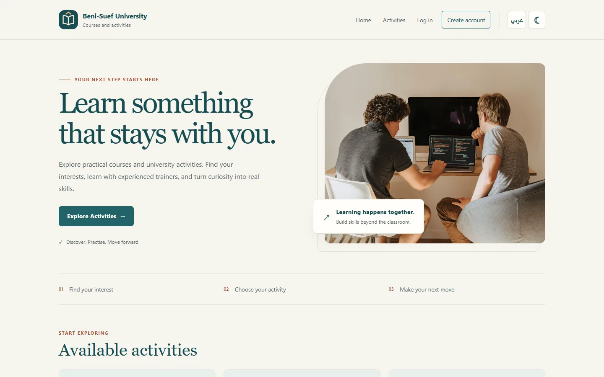

BSU / UNIVERSITY PORTAL

A campus of possibilities.AR / EN
FULL-STACK WEB APPLICATION01
University Courses
& Activities Portal
A bilingual place to discover university courses, create a student account, and manage activity enrollments. Built as an educational project inspired by Beni-Suef University.
AuthenticationArabic / RTLSearch & filtersEnrollment logicAdmin workflows